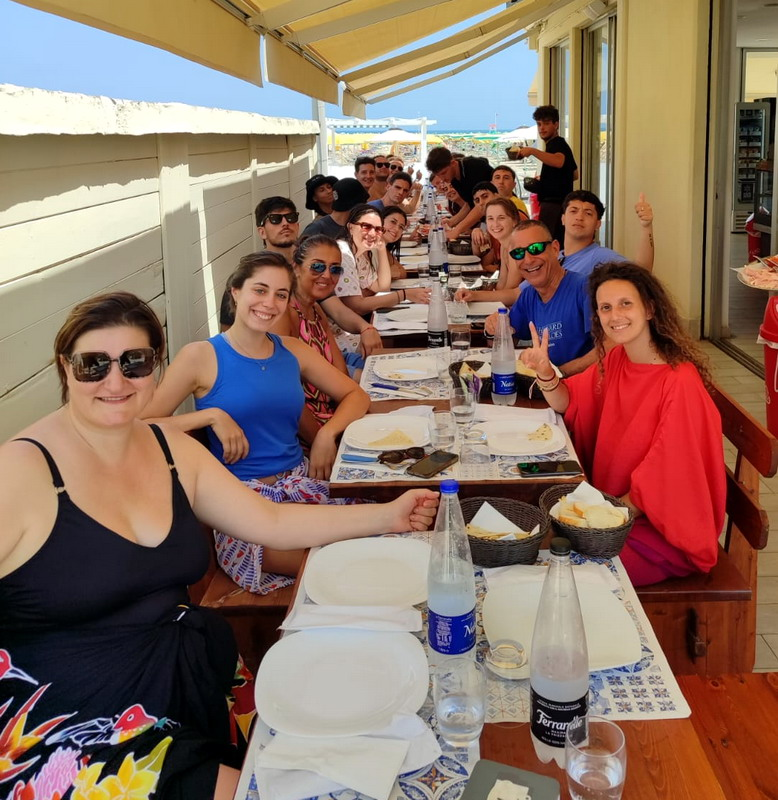
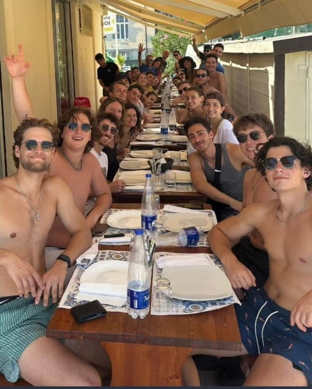
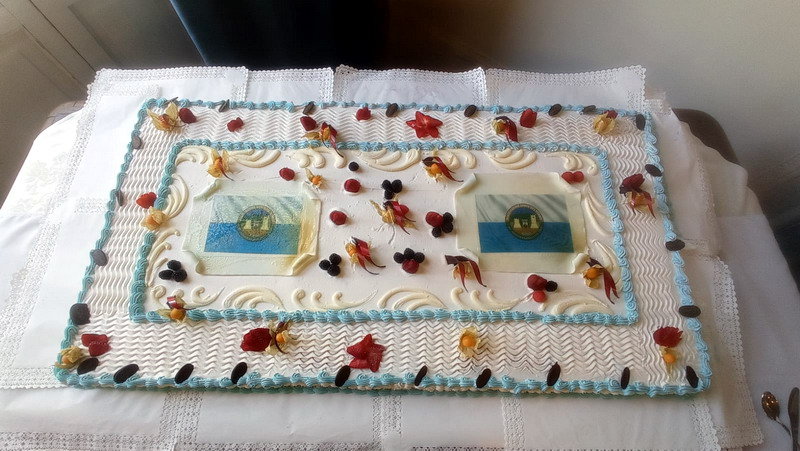
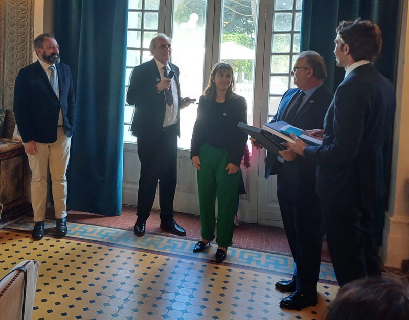
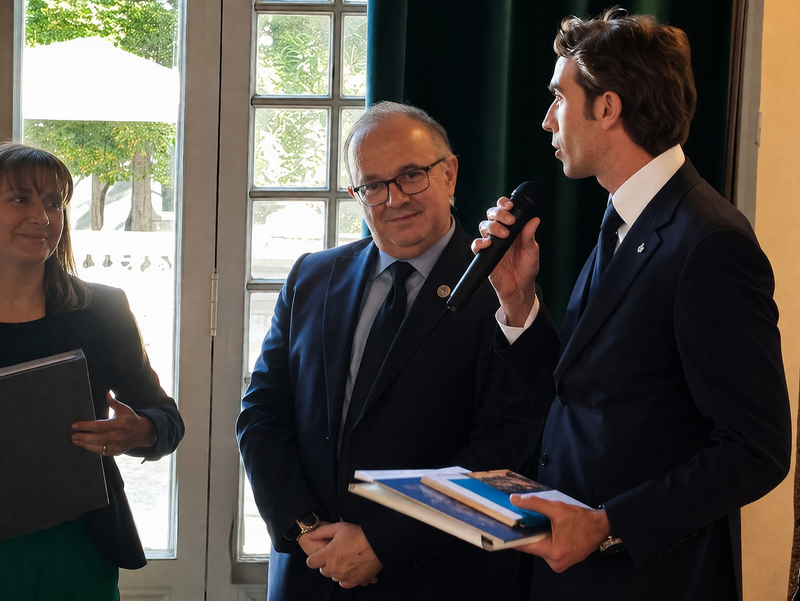
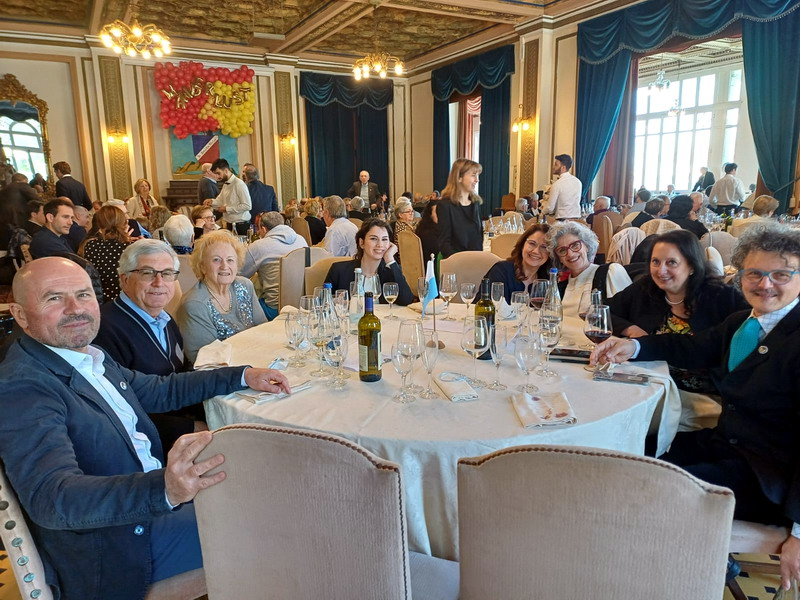
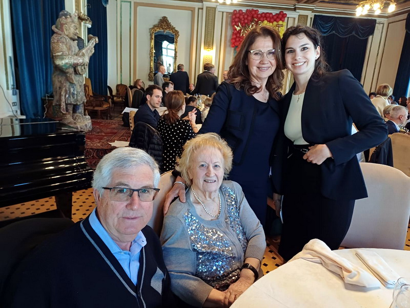
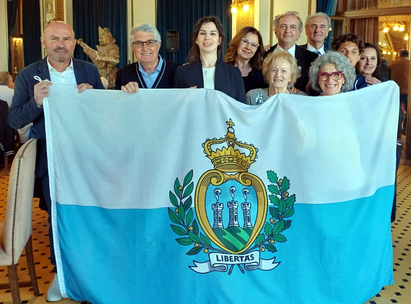

Anche quest'anno l'Associazione «Gente del Titano» della comunità di Rimini
ha avuto il piacere di offrire una giornata al mare ai ragazzi della 42ª edizione dei
Soggiorni Culturali e ai loro accompagnatori, presso il Bagno 105.
Eravamo in 39 e la giornata è trascorsa in allegria.
Dopo il pranzo al ristorantino, sono proseguite le attività in spiaggia e i momenti di relax
iniziati al mattino. Nel tardo pomeriggio, i partecipanti sono poi ripartiti alla volta di San Marino.


✦ ✦ ✦
🍽️ Pranzo Sociale 2024
Domenica 21 Aprile 2024 si è svolto il nostro consueto pranzo annuale nella cornice del
Grand Hotel di Riccione, in occasione del 45º anniversario dalla nascita delle associazioni.
Con grande soddisfazione la partecipazione è stata numerosissima, con oltre 230 invitati.
All'evento sono intervenuti il Segretario di Stato per gli Affari Esteri Luca Beccari,
il Segretario di Stato per gli Affari Interni Gian Nicola Berti,
il Segretario di Stato alla Giustizia Massimo Ugolini,
lo staff delle Segreterie di Stato,
il Console di Ravenna Marino Forcellini,
il Presidente della comunità di Ravenna Gianluca Giorgetti,
il Presidente della comunità di Torino Bruno Ugolini,
l'ex Presidente e cofondatore Giovanni Conti
e l'ex Console Maurizio Battistini.
Nell'occasione è stata donata a tutti i partecipanti la nostra spilla celebrativa.






✦ ✦ ✦
🗳️ Incontro con i rappresentanti dei partiti candidati per le Elezioni Politiche del 9 Giugno 2024
In vista delle consultazioni elettorali del 9 Giugno 2024, Venerdì 31 Maggio dalle ore 20:30
si è tenuto, presso la sede consolare di Rimini (Corso D’Augusto n. 14), un incontro aperto a tutta la cittadinanza
sammarinese residente nella circoscrizione di Rimini e provincia.
Durante la serata i rappresentanti dei partiti politici hanno illustrato i rispettivi programmi e risposto alle domande del pubblico.
Al termine dell'incontro è stato offerto a tutti i partecipanti un leggero buffet.